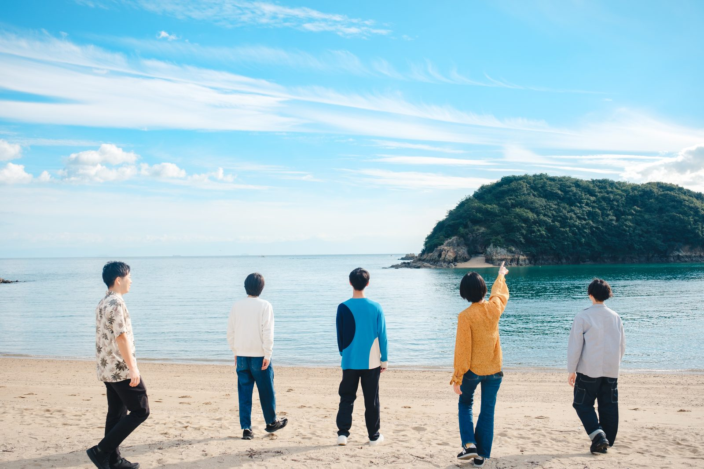
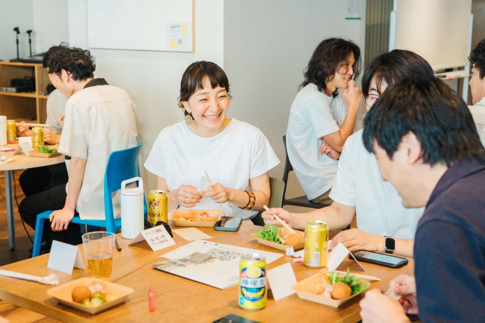
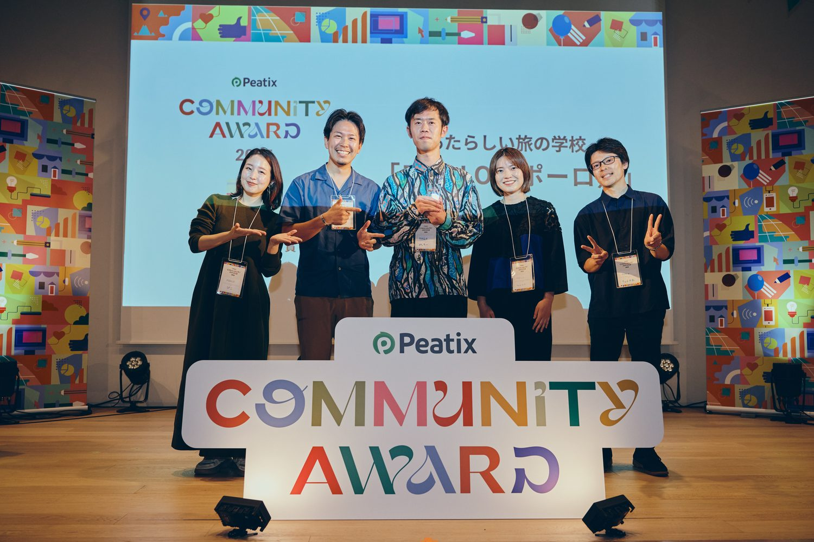

二十代後半の、生き方を問い直す90分。｜vol.01
働く意味・生きる意味を、見つけにいく90分。答えを出す場ではありません。立ち止まって、いま感じていることを自分のことばにしていく時間です。

日々に大きな不満はない。仕事もひととおり回せるようになった。それでも、同期の昇進や、SNSで見かける誰かの転職が、ふと引っかかる。比べたところで、自分がどうしたいのかは分からないのに。
この体験会でするのは、いま感じているモヤモヤを、ワークと対話で少しずつ言葉にしていく作業です。90分ですべてが解決するわけではありません。それでも、自分が何に引っかかっているのか、その輪郭くらいはつかめてくる。
大きな決断を迫る場ではありません。持ち帰るのは、次の三つくらいです。
「なんとなく不安」のままでは、考えようがありません。だからまず、ワークで書き出すところから。うまくまとまらなくて大丈夫。書けたところまでで十分です。
話してみると、似たようなことを考えている同世代が、意外といるものです。悩んでいるのは自分だけじゃなかった——そう思えるだけでも、来てよかったと感じるはず。
転職や独立といった大きな話ではありません。明日からちょっと試せることを、ひとつだけ決めて帰ってもらいます。

聞くだけのセミナーではなく、自分で書いたり話したりする時間が中心です。
聞くだけで終わらないよう、書く・話す時間を厚くしています。まとまっていない言葉こそ歓迎される場です。
当日はたとえば、こんな問いを扱います。どれも正解のない問いです。思いついたことを、そのまま書いてもらえれば大丈夫です。
このまま続けた先に、自分は何を見たいんだろう？
うまく答えられなくても構いません。考えてみること自体が目的です。
「こなせる」と「楽しい」を、混同していないだろうか？
仕事に慣れてきた時期ほど、この区別があいまいになりがちです。
誰の基準で、自分を測ってきたんだろう？
同期や年収など、比べる相手をいったん外して考えてみます。

この体験会に申し込んだ方が、参加時に書いてくれた「いま向き合っていること」。あなたの感覚と、どこか重なるかもしれません。
「これがやりたい」で選んできたはずなのに、ありたい自分とズレていく。どこへ進めばいいのか、決められずにいました。
28歳・女性・会社員
環境は悪くない。普通に生きていける。でも、この生活をずっと続けていいのかな、挑戦した方がいいんじゃないかって。
28歳・女性・保育教諭
仕事もプライベートも大事にしたい。でも同じ温度で話せる人が周りにいなくて、自分の考えを話せる場所がほしかった。
29歳・女性・会社員

この体験会を主催するPOOLOは、7年以上・12期続く大人の学び場です。その活動は、Peatix Community Award 2025 を受賞しました。
＊お申し込みいただいた方が、参加時に書いてくださったことばです。ご本人が特定されない形（属性のみ）で掲載しています。

POOLO（ポーロ）は、旅を愛する会社TABIPPOがつくった「あたらしい旅の学校」。7年以上・12期にわたって、20代の生き方の探究に伴走してきました。2025年には、Peatix Community Awardを受賞しています。
20代後半でPOOLOに出会う方々には、ひとつの共通項があります。仕事には手応えが出てきていて、自分なりに走ってきた実感もある。それでも、その先に何があるのか、自分は何を大事にして生きていきたいのか、改めて考えてみたくなる瞬間がある。
そんな方に必要なのは、新しい情報やフレームワークではなく、自分のなかにすでにある素材を、他者の問いで一緒に言葉にしていく時間ではないか。そう考えて、この体験会を企画しました。
はい。対話を大切にする場のため、今回は顔出しでのご参加をお願いしています。お互いの表情が見えることで、話がぐっとあたたまります。カメラをオンにできる環境でお越しください。
ほとんどの方が、ひとりで参加します。初対面同士を前提に設計しているので、安心して来てください。
当日に、無理なご案内をすることはありません。続きを知りたい方にだけ、後日こちらから軽くご案内します。
今回はPCからのご参加をお願いしています。ワークで書き出す時間があるため、画面と手元の両方が使える環境だと快適です。（メモできるものが手元にあると◎）
うまく話す必要はありません。まとまっていない言葉こそ歓迎される場です。まずは聞くところから始めて大丈夫です。
席は、10名分です。
対話の時間をちゃんと取りたいので、人数を絞っています。
無料で申し込む→2026.7.5（日）13:00–14:30 ／ Zoomオンライン ／ 参加無料・先着10名